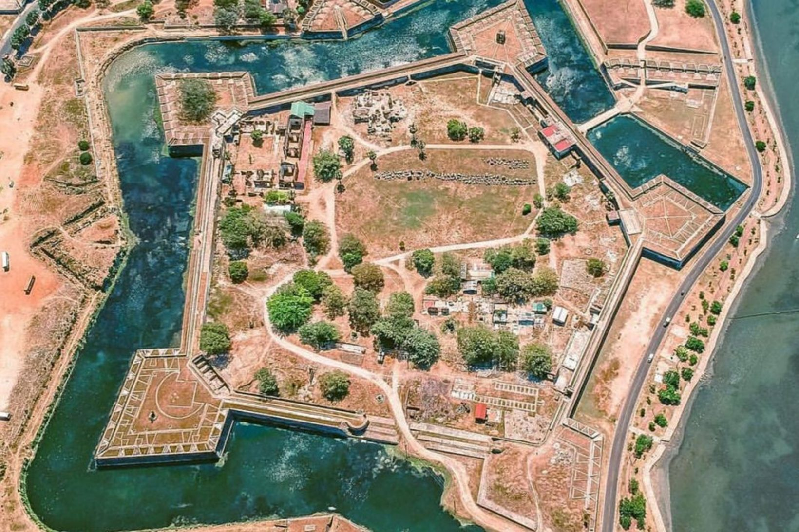

Sri Lanka | Jaffna
Jaffna is a city on the northern tip of Sri Lanka. Nallur Kandaswamy is a huge Hindu temple with golden arches and an ornate gopuram tower. By the coast, star-shaped Jaffna Fort was built by the Portuguese in the 17th century and later occupied by the Dutch and British. Jaffna Public Library is a symbol of the city’s post-war regeneration. Jaffna Archaeological Museum has Dutch cannons and pre-colonial artifacts
Elevation: 5 m
Weather: 31°C, Wind S at 18 km/h, 69% Humidity
Province: Nothern Province
Population: 88,138 (2012)
Area:20.2 km²
Jaffna Fort (Tamil: யாழ்ப்பாணக் கோட்டை, romanized: Yāḻppāṇak Kōṭṭai; Sinhala: යාපනය බලකොටුව Yapanaya Balakotuwa) is a fort built by the Portuguese at Jaffna, Sri Lanka in 1618 under Phillippe de Oliveira following the Portuguese invasion of Jaffna. The fort is located near the coastal village of Gurunagar. Due to numerous miracles attributed to the statue of Virgin Mary in the church nearby, the fort was named as Fortress of Our Lady of Miracles of Jafanapatão (Fortaleza de Nossa Senhora dos Milagres de Jafanapatão). It was captured by the Dutch under Rijcklof van Goens in 1658 who expanded it. In 1795, it was taken over by the British, and remained under the control of a British garrison till 1948. As the only large military fort in the country, due to the presence of only government and military buildings within its ramparts, it was garrisoned by a detachment of the Ceylon Army.